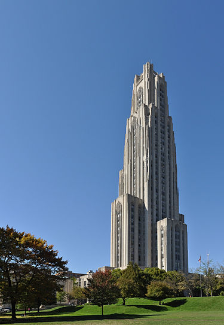

Cathedral of Learning
This gothic revival cathedral located on the University of Pittsburgh's campus is the second tallest university building in the world. It is 42 stories tall and holds 30 nationality rooms. 28 of the 30 nationality rooms are currently in use for class. They began construction of the nationality rooms in 1926 and construction of additional rooms is still ongoing. The cathedral itself was comissioned in 1921 and the first class was held in the building in 1931. However, the exterior was not finished at this time, being completed just 3 years later.
